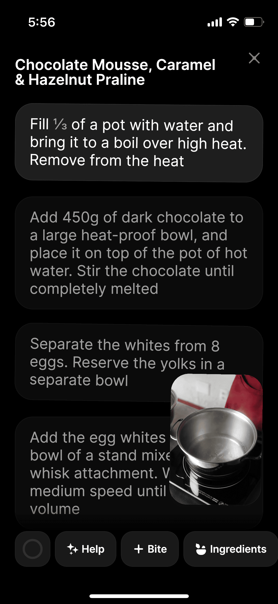
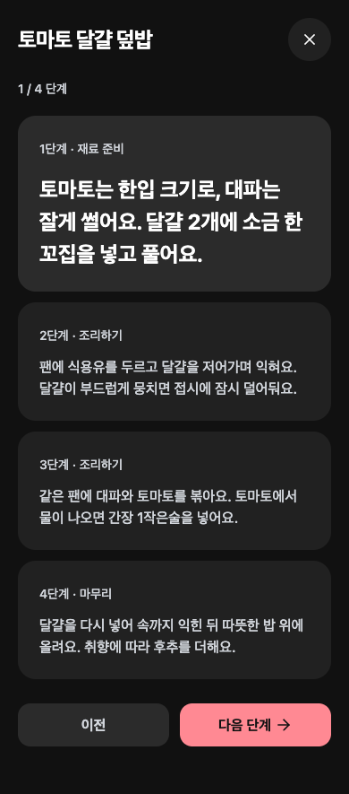

<!doctype html><meta charset="utf-8"><title>Round8 cook comparison</title><style>body{margin:0;padding:16px;background:#ddd;font:16px sans-serif}main{display:flex;gap:16px;align-items:flex-start}figure{margin:0;width:390px}img{width:390px;display:block}figcaption{padding-bottom:12px}</style><main><figure><figcaption>R2-cook source, display390 (CSS/DPR unknown)</figcaption></figure><figure><figcaption>Round8 cook, CSS390</figcaption></figure></main>